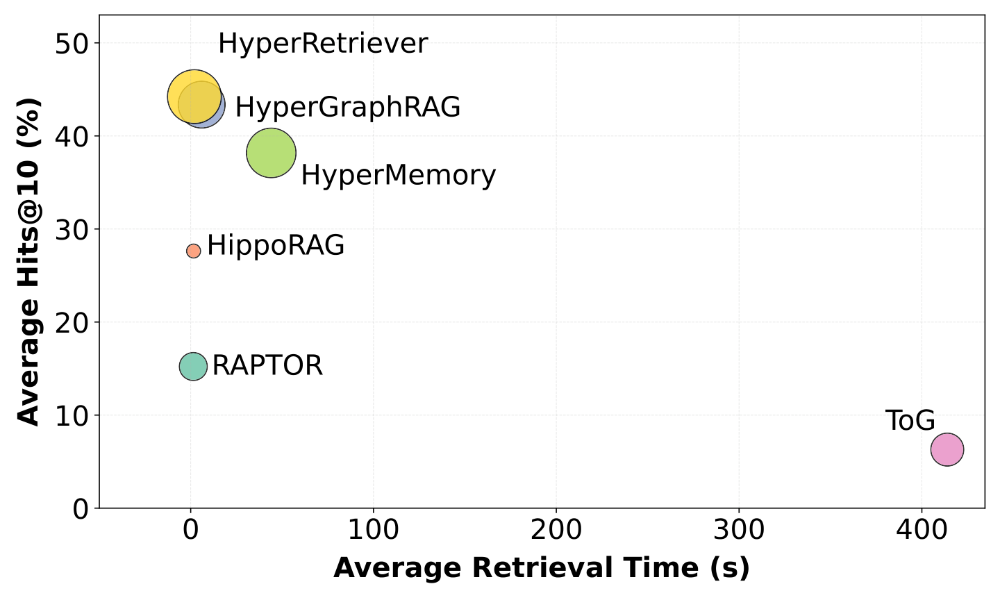

FIG. 3a
越容易影响别人，最终会有多少人参与？
稳态比例：长期仍在参与的人占比 · 往右：个人传播更强
选中“原图理论线”可对照平均场结果。强群体系列包含不同初始条件。
先理解共同作用，再同步比较两种传播过程，最后对照论文结果。
只计算 A、B 各自的影响。
需要同时解释这四种状态，而非只匹配最后一行。
依照论文图 1 的通道规则：C 未参与时，每个活跃邻居通过两两连接独立尝试传播；仅当存在三人共同群体、且 A 和 B 都活跃时，再增加一次群体传播尝试。示意参数 β=0.1、β△=0.3，仅方便理解，非下方图 3 的参数。激活概率 = 1 − 所有有效通道均失败的概率。
两人均活跃：两两模型为 1−0.9²=19%；存在共同群体时为 1−0.9²×0.7=43.3%。概率增加不代表 C 必定被激活。本示意固定 C 尚未参与。论文完整模型还包括已参与节点以概率 μ 退出。
填充区域对应论文的三人单纯形（2-simplex），是一种还包含内部两两边的超边。这里比较固定边权、独立传播的基线；加入群体标记或联合状态规则的图模型也可以表达共同作用。
λ=0.75，λ△=2.5，与论文图 3b 相同；20% 是强群体平均场分界，不适用于两两模型。
先播放，观察亮起和熄灭的节点。
采用论文的随机单纯复形 RSC 构造规则：2,000 人，平均两两度约 20，平均三人群体度约 6。按实际平均度换算 β=λμ/〈k〉、β△=2.5μ/〈k△〉，退出概率 μ=0.05。两组使用相同网络、初始参与者和两两传播／退出随机事件，群体组额外加入三人共同作用。
上方两张网络展示全网中相同的 96 人局部视窗，所有窗口内节点状态均来自全网计算。下方曲线与当前参与人数统计全网 2,000 人；净变化对比这一播放段的起点与终点。绿色三角表示窗口内本步触发的超边，窗口外联系参与计算但不绘出。有限网络会有波动；20% 是指定参数的平均场分界，不是程序强制设置的判定线。
从检索片段，到关系路径，再到完整事实
HyperGraphRAG 2025 · Table 2 / Overall ↗
HyperGraphRAG 2025 · Fig. 6(a) · 医学 ↗
检索上下文 token，不是 API 输入＋输出总量；GraphRAG 此项未单列。
HyperGraphRAG 2025 · Table 3 ↗
生成阶段秒数／次查询，非单独检索耗时；美元／1,000 次查询。
HyperRAG 2026 · Table 3 / AVG · 1% 子集 ↗
沿用原表 AVG（与逐行简单均值有出入），不与前三图合并为一次实验。
| 设置 | 检索上下文 token | 答案 F1 | 相对普通 RAG |
|---|
| 方法 | 生成阶段 / 每次查询 | 每 1,000 次查询费用 | 构建 / 每 1,000 token |
|---|

| 方法 | 检索耗时（约） | Hits@10（约） |
|---|
这里是原图坐标约值，非逐题运行日志。原图 token 气泡没有数值刻度，不反推消耗。Fig. 3 与 Table 3 的实验口径不同。原图 CC BY 4.0。